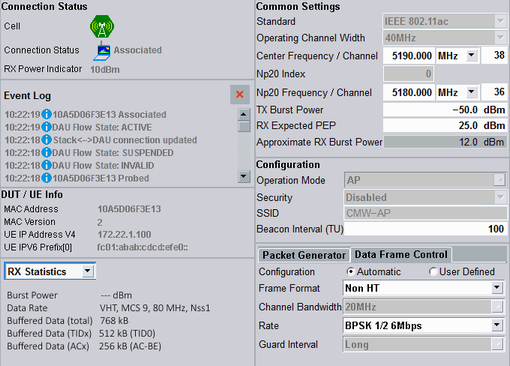

Settings
The main view provides the most important settings for fast access.

Settings in the main view
All settings are also configurable via the main configuration dialog. Refer to the following sections.
- "Common Settings" area:
– "Standard" – "Operating Channel Width" – "Center Frequency / Channel" – "RF TX Burst Power" – "RF Exp. Peak Envelope Power" – "Approximate RX Burst Power" - "Configuration" area:
– "Operation Mode" – "Mode" – "SSID" – "Beacon Interval" - "Packet Generator" tab:
See "Packet Generator Settings" - "Data Frame Control" tab:
See "Non-HT, HT, VHT, HE Frame"
The following parameters are not contained in the main configuration dialog.
The displayed power is calculated from the specified expected PEP and the selected standard.
Remote command: